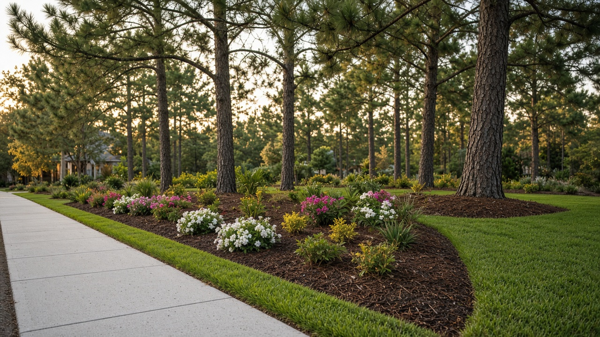

Weekly and bi-weekly yard service with reasonable rates.

Mowing, trimming, edging and cleanup every week.
The same full visit, every other week.
Serving Florence, SC(843) 610-8841Pottsc79@gmail.com